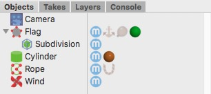

|
DynamicsThe Dynamics feature in Cheetah3D is used to simulate rigid body and soft body dynamics (physics). Hereby Cheetah3D relies on the industry proven Bullet Physics engine which was already used for many Hollywood block busters. To create a physical simulation you first have to tell Cheetah3D which objects of your scene should be part of the dynamics simulation. Therefore you have to assign the appropriate dynamics tags to these objects. For creating a rigid body assign a Rigid body tag, for creating a soft body assign a Soft Body Tag and for creating a rope assign a Rope Tag. If you want to attach a rigid body to a soft body you can use the Anchor tag.  Once you've assigned the proper tags to the objects you can set the physical properties of the objects (like the mass, friction, stiffness, etc.) in their dynamics tags. Now you are already done. Click on the Play animation button in the Timeline to view the simulation results in real-time. Initial Sate Every physical simulation needs an initial state. This is the state (position, rotation, speed, etc.) of all objects, soft body control points or particles at time T=0. In Cheetah3D every physical simulation starts at time T=0. When you run the simulation for the first time Cheetah3D automatically saves the initial state of all objects at that time. Once the animation return back to T=0 the initial state is recovered. The initial state of a object can be only manipulated at time T=0. So once you've attached dynamics tags to objects only transform them at time T=0 otherwise the initial position of the object gets recovered once the time changes to T=0 later. Simulation complexity If the simulation isn't too complex you can view the dynamics simulation in real-time by simply playing the animation. But should the simulation become too complex to play it in real-time anymore (30 frames per second) then it is recommended to turn on the "Frame by Frame" playback mode. It guarantees that every frame is simulated and that Cheetah3D doesn't drop frames to stay realtime. You can turn on the "Frame by Frame" mode with the "Animation -> Frames per Second" menu command. This mode also improves the simulation accuracy so it is never a bad idea to turn it on when dealing with dynamics. Once you use big particle systems or soft bodies in your simulation even the "Frame by Frame" mode might become to slow. Then it is time to start baking your simulation. During baking the simulation results are kept in a cache which is then used to play back the simulation. With the baking feature even particle systems with thousand of rigid bodies can be handled. But be aware that the dynamics cache is saved to your .jas file. So .jas file size can increase considerably. Tips
Dynamics preferences You can access the Dynamics preferences either by using the Dynamics toolbar icon or the "Animation -> Dynamics" menu item. Within the Dynamics preferences you can set various physical environment parameters. But you can perform also certain operations like clearing the initial state or baking a simulation. Properties
|